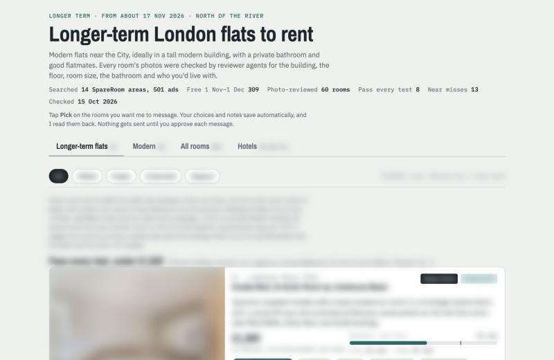

Work / Agent workflow
London rental search
Moving to London from abroad, I needed a room near the City without viewing dozens in person. I had Claude build a search system. It collects listings, checks commute times and area data from public sources, has AI agents review every listing's photos against a written rubric, and ranks what's left. I chose from a shortlist and approved every message.
- My role
- Requirements, rules, choices, approvals
- Built with
- Claude Code, Python, open data
- Period
- Oct 2026
- Status
- Paused after a first-month booking
At a glance
A sourcing and due-diligence problem: too many options and no way to inspect them in person.
- Problem
- Hundreds of London rental ads, viewed from abroad, with no way to see rooms or areas in person.
- What I did
- Defined the requirements, set the scoring rules, chose from the shortlist and approved every message sent.
- Result
- About 930 listings reviewed across about 7,500 photos, a ranked shortlist, and a room booked.
- Built with
- Claude Code, Python standard library, TfL, police and census open data

What it does
A search system for renting a room in London from abroad: it collects listings, checks commute times and area data from public sources, has AI agents review every listing's photos against a written rubric, and ranks what's left on a shortlist board.
Why I built it
I was moving to London from abroad and needed a room near the City, but I couldn't view dozens of places in person. I needed a way to judge a room and its area from a listing alone, without getting caught by a scam.
My role and the AI's role
- Me: the requirements, set out in a ten-round interview; the rules; picks from the shortlist; approval of every message; the booking.
- Claude Code: built the tools, ran the searches and reviewer agents, built the board and drafted messages.
How it works
- Collect. Pulls listings from the rental sites I chose, and logs every one it sees.
- Commute. Asks the TfL journey planner for the door-to-door time to Bank in the City, arriving at 08:30.
- Area. Counts serious crime within 800 m of each station from police open data, and looks up the Census 2021 share of 25 to 34 year olds.
- Photo review. AI reviewer agents score every listing's photos against a written rubric: bed size, room size, whether a desk fits, light, how modern it is, the bathroom, and red flags.
- Rank. A written formula combines commute, room score, modernity, a private bathroom and price, with a penalty for each red flag.
- Shortlist. A board shows what passes every test. I pick, and nothing is sent to a landlord until I approve that exact message.
What I caught and changed
- An early area run had matched the wrong station (West Hampstead instead of West Ham). It was caught and re-run.
- An all-crime figure had been quoted as serious crime. It was corrected, and the method now states its definition of serious crime.
Both are now covered by the area check's controls, described under 'How it was checked'.
How it was checked
The area method has built-in controls: a known hotspot and a known quiet area must separate, or the run isn't trusted. Counts on this page come from the project's own result files.
Where it is now
Paused after a first-month room was booked. The longer-term search uses the same system.
Limits
- The AI photo scores were never checked against human ratings, so their accuracy is unknown.
- Commute times come from each site's approximate map pin, not the exact address.
- Crime counts are by report location and lag by about two months, and busy areas read high. It's a comparison tool, not a safety guarantee.
Tools and credits
- Built with Claude Code (Anthropic). Python standard library.
- Open data: TfL Journey Planner, data.police.uk, Nomis (Census 2021), postcodes.io.
- The area method is published as a skill: uk-area-safety-screen.
Status checked 20 Oct 2026. Counts come from the project's own result files, counted by script on that date.